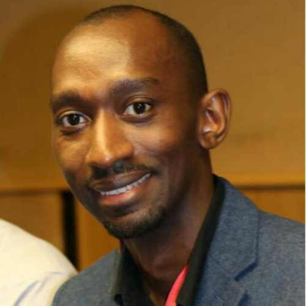
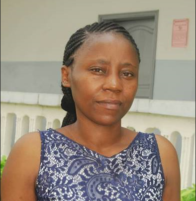
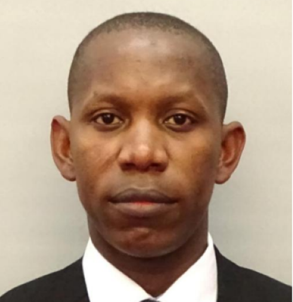

Team
Team Players


Ruhinda Edwin
Medicine Specialist SonographerRead more
Edwin is a Fetal Medicine Specialist Sonographer at North Middlesex University Hospital United Kingdom and is also passionate about ultrasound teaching. He is a clinical supervisor for postgraduate ultrasound students and is part of deanery faculty for Royal College of Obstetricians and Gynaecologists(RCOG) ultrasound training for junior doctors. He is the Director of Training and is also a Co-chair of our OutReach Programme.

Theonille Mukabagorora
DesignationRead more
Theonille is the Director of Research and Policy. She is a lecturer at the University of Rwanda since 2016 and is currently a PhD candidate at the University of Pretoria with a special interest in vascular sonography. She obtained a PG Diploma in Teaching and Learning in Higher Institutions from the University of Rwanda, College of Education, in 2019. She obtained her Masters Degree in Diagnostic Sonography in 2017 from Ernest Cook Ultrasound Research and Education Institute ( ECUREI), Uganda. Theonille is a member of the Medical Imaging Society of Rwanda where she chairs the Education and Research committee since 2019. Her clinical work started in 2009 at Butare Teaching Hospital Rwanda where she started as a radiographer. However, since 2010, she has oriented her interest towards Diagnostic Sonography.
